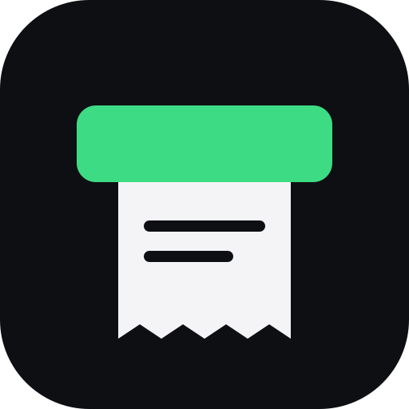

Wall of TextPrivacy policy
Last updated: 24 November 2026
Wall of Text is software for a home receipt printer. It runs on the owner's own Raspberry Pi, on their home network. There is no Wall of Text server, account or cloud service. This policy explains what the software does with your data, in particular data from Google.
What data from Google it uses
Only if the printer's owner connects a Google account, and only with read-only permission:
- Google Calendar (
calendar.readonly): the list of your calendars, and the events of the calendars you choose: title, time, location, description, video-call link and the names of other guests. - Google Tasks (
tasks.readonly): the names of your task lists, and the open tasks in the lists you choose: title, notes and due date. - Your email address (
openid,email): only to show which Google account is connected.
How it is used
- Events and tasks are read when something is printed (for example a scheduled morning briefing or a "Today's agenda" button press) and when you open the Google settings page. They are used only to lay out and print the slip and to show a preview of it in the app on your home network.
- Calendar and task data is not saved on the Pi, except as part of the printed slip's image in the printer's own print history, which you can delete in the app and which is removed automatically after the time you set (30 days by default).
- Nothing is ever created, changed or deleted in your Google account.
Who it is shared with
Nobody. Your data goes only from Google to the Raspberry Pi in your home. It is not sent to the developers, to analytics or advertising services, or to any other third party, and it is not used to train AI models. Wall of Text has no tracking or analytics.
Wall of Text's use and transfer of information received from Google APIs adheres to the Google API Services User Data Policy, including the Limited Use requirements.
How the sign-in is stored
The Google sign-in (a refresh token) and the Google Cloud client secret are stored only on the Pi, in a file that only the Wall of Text service can read. They are never included in backups, logs or the source code.
How to remove access
- In the app: Settings › Google › Disconnect Google. This deletes the sign-in from the Pi and asks Google to cancel it.
- At any time in your Google account: myaccount.google.com/permissions.
Other data
Notes, drawings, photos, schedules, settings and print history that you create in the app stay on the Pi in your home. Weather comes from Open-Meteo, which is sent only the location you set.
Contact
Questions about this policy: open an issue at github.com/keyquesttech/Wall-of-text/issues.